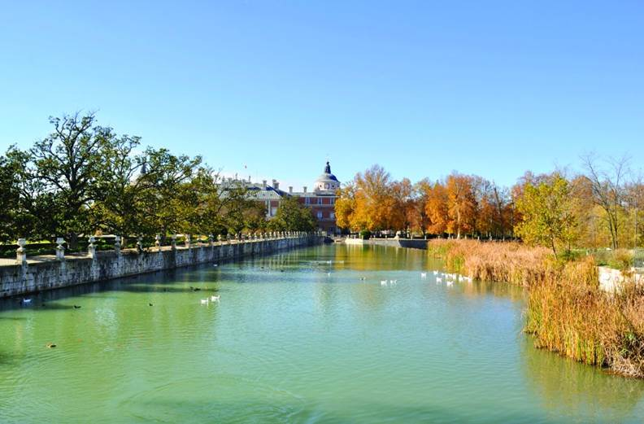

Preguntas históricas sobre Aranjuez
1- ¿Quién fue el rey que ordenó la construcción del Palacio Real de Aranjuez en el siglo XVI?

PISTA: Fue el mismo monarca que ordenó la construcción del Monasterio de El Escorial
2- ¿Cuál es el nombre del río que atraviesa Aranjuez?
PISTA: Es el río más largo de la península ibérica